library(terra)terra 1.9.46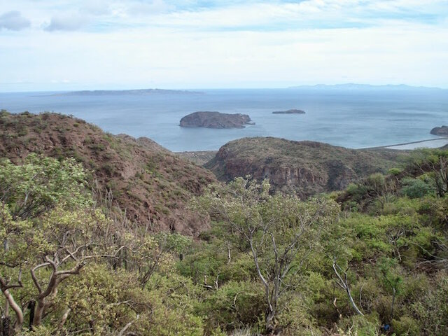
Raster data is good for representing continuous surfaces and performing fast analyses on large areas, such as calculating a surface temperature map or a land-cover classification.
All raster operations in this topic are accomplished using the terra library, the modern replacement for the older raster library. If you run across older code online that uses raster(), extent(), or projectRaster(), the terra equivalents are rast(), ext(), and project().
library(terra)terra 1.9.46Rasters are representations of continuous, or semi-continuous, data. You can envision a raster just like an image. When me make a leaflet() map and how the tiles, each pixel is colored a particular value representing elevation, temperature, precipitation, habitat type, or whatever. This is exactly the same for rasters. The key point here is that each pixel represents some defined region on the earth and as such the raster itself is georeferenced. It has a coordinate reference system (CRS), boundaries, etc.
A raster is simply a matrix with rows and columns and each element has a value associated with it. You can create a raster de novo by making a matrix of data and filling it with values, then turning it into a raster.
Here I make a raster with random numbers selected from the Poisson Distribution (fishy, I know) using the rpois() function. I then turn it into a matrix with 7 rows (and 7 columns).
vals <- rpois(49, lambda=12)
x <- matrix( vals, nrow=7)
x [,1] [,2] [,3] [,4] [,5] [,6] [,7]
[1,] 15 12 7 16 7 14 13
[2,] 18 16 11 7 20 13 6
[3,] 15 11 14 13 17 11 10
[4,] 14 14 10 17 11 13 13
[5,] 12 11 15 15 12 17 13
[6,] 10 22 11 11 10 12 18
[7,] 14 10 7 6 21 7 14While we haven’t used matrices much thus far, it is a lot like a data.frame with respect to getting and setting values using numerical indices. For example, the value of the 3rd row and 5th column is:
x[3,5][1] 17To convert this set of data, as a matrix, into a geospatially referenced SpatRaster object we pass it to the rast() function:
r <- rast( x )
rclass : SpatRaster
size : 7, 7, 1 (nrow, ncol, nlyr)
resolution : 1, 1 (x, y)
extent : 0, 7, 0, 7 (xmin, xmax, ymin, ymax)
coord. ref. :
source(s) : memory
name : lyr.1
min value : 6
max value : 22Notice that when I plot it out, it does not show the data, but a summary of the data along with some key data about the contents, including:
- A class definition (SpatRaster) - The size of the underlying data matrix (rows, columns, and the number of layers), - The resolution (e.g., the spatial extent of the sides of each pixel). Since we have no CRS here, it is equal to \(nrow(x)^{-1}\) and \(ncol(x)^{-1}\).
- The extent (the bounding box) and again since we do not have a CRS defined it just goes from \(0\) to \(1\). - The coord. ref. (missing) - The source, which is memory if the values are held in R or the name of the file the values are read from.
If these data represent something on the planet, we can assign the dimensions and CRS values to it and use it in our normal day-to-day operations.
We can also grab a raster object from the filesystem or from some online repository by passing the link to the rast() function. Here is the elevation, in meters, of the region in which Mexico is found. To load it in, pass the url.
url <- "https://dyerlabteaching.github.io/CourseData/Spatial/alt_22.tif"
r <- rast( url )
rclass : SpatRaster
size : 3600, 3600, 1 (nrow, ncol, nlyr)
resolution : 0.008333333, 0.008333333 (x, y)
extent : -120, -90, 4.163336e-16, 30 (xmin, xmax, ymin, ymax)
coord. ref. : lon/lat WGS 84 (EPSG:4326)
source : alt_22.tif
name : alt_22
min value : -202
max value : 5469Notice that this raster has a defined CRS and as such it is projected and the extent relates to the units of the datum (e.g., from -120 to -90 degrees longitude and 0 to 30 degrees latitude).
If we plot it, we can see the whole raster.
plot(r)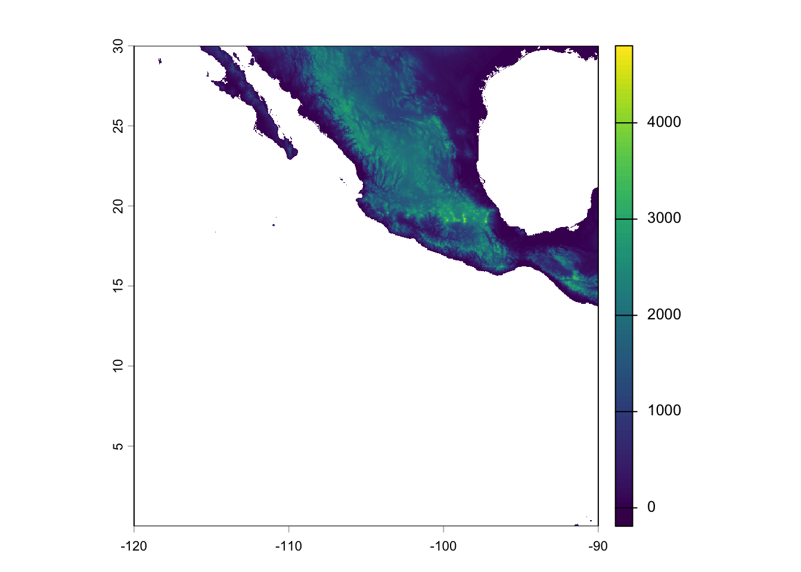
Now, this raster is elevation where there is land but where there is no land, it is full of NA values. As such, there is a ton of them.
format( sum( is.na( values(r) ) ), big.mark = "," )[1] "10,490,650"One of the first things to do is to crop the data down to represent the size and extent of our study area. If we have over 10 million missing data points (the ocean) and most of Mexico in this raster above but we are only working with sites in Baja California (Norte y Sur), we would do well to excise (or crop) the raster to only include the area we are interested in working with.
To do this, we need to figure out a bounding box (e.g., the minimum and maximum values of longitude and latitude that enclose our data). Let’s assume we are working with the Beetle Data from the Spatial Points Slides and load in the Sex-biased dispersal data set and use those points as a starting estimate of the bounding box.
library( sf )Linking to GEOS 3.13.0, GDAL 3.8.5, PROJ 9.5.1; sf_use_s2() is TRUElibrary( tidyverse )── Attaching core tidyverse packages ──────────────────────── tidyverse 2.0.0 ──
✔ dplyr 1.2.1 ✔ readr 2.2.0
✔ forcats 1.0.1 ✔ stringr 1.6.0
✔ ggplot2 4.0.3 ✔ tibble 3.3.1
✔ lubridate 1.9.5 ✔ tidyr 1.3.2
✔ purrr 1.2.2 ── Conflicts ────────────────────────────────────────── tidyverse_conflicts() ──
✖ tidyr::extract() masks terra::extract()
✖ dplyr::filter() masks stats::filter()
✖ dplyr::lag() masks stats::lag()
ℹ Use the conflicted package (<http://conflicted.r-lib.org/>) to force all conflicts to become errorsbeetle_url <- "https://dyerlabteaching.github.io/CourseData/Spatial/AraptusDispersalBias.csv"
read_csv( beetle_url ) |>
st_as_sf( coords=c("Longitude","Latitude"), crs=4326 ) -> beetlesRows: 31 Columns: 9
── Column specification ────────────────────────────────────────────────────────
Delimiter: ","
chr (1): Site
dbl (8): Males, Females, Suitability, MFRatio, GenVarArapat, GenVarEuphli, L...
ℹ Use `spec()` to retrieve the full column specification for this data.
ℹ Specify the column types or set `show_col_types = FALSE` to quiet this message.summary( beetles ) Site Males Females Suitability
Length:31 Min. : 9.00 Min. : 5.00 Min. :0.0563
Class :character 1st Qu.:16.00 1st Qu.:15.50 1st Qu.:0.2732
Mode :character Median :21.00 Median :21.00 Median :0.3975
Mean :25.68 Mean :23.52 Mean :0.4276
3rd Qu.:31.50 3rd Qu.:29.00 3rd Qu.:0.5442
Max. :64.00 Max. :63.00 Max. :0.9019
MFRatio GenVarArapat GenVarEuphli geometry
Min. :0.5938 Min. :0.0500 Min. :0.0500 POINT :31
1st Qu.:0.8778 1st Qu.:0.1392 1st Qu.:0.1777 epsg:4326 : 0
Median :1.1200 Median :0.2002 Median :0.2171 +proj=long...: 0
Mean :1.1598 Mean :0.2006 Mean :0.2203
3rd Qu.:1.3618 3rd Qu.:0.2592 3rd Qu.:0.2517
Max. :2.2000 Max. :0.3379 Max. :0.5122 Now, we can take the bounding box of these points and get a first approximation.
beetles |> st_bbox() xmin ymin xmax ymax
-114.29353 23.28550 -109.32700 29.32541 OK, so this is the strict bounding box for these points. This means that the minimum and maximum values for these points are defined by the original locations—for both the latitude and longitude (both minimum and maximum)—we have sites on each of the edges. This is fine here but we could probably add a little bit of a buffer around that bounding box so that we do not have our sites on the very edge of the plot. We can do this by either eyeballing-it to round up to some reasonable area around the points or apply a buffer (st_buffer) to the union of all the points with some distance and then take the bounding box. I’ll go for the former and make it into an extent object (a SpatExtent) using the ext() function.
baja_extent <- ext( c(-116, -109, 22, 30 ) )
baja_extentSpatExtent : -116, -109, 22, 30 (xmin, xmax, ymin, ymax)Then we can crop() the original raster using this extent object to create our working raster. I can then dump my points onto the same raster plot by indicating add=TRUE.
alt <- crop( r, baja_extent )
plot(alt)
plot( beetles["Suitability"], pch=16, add=TRUE)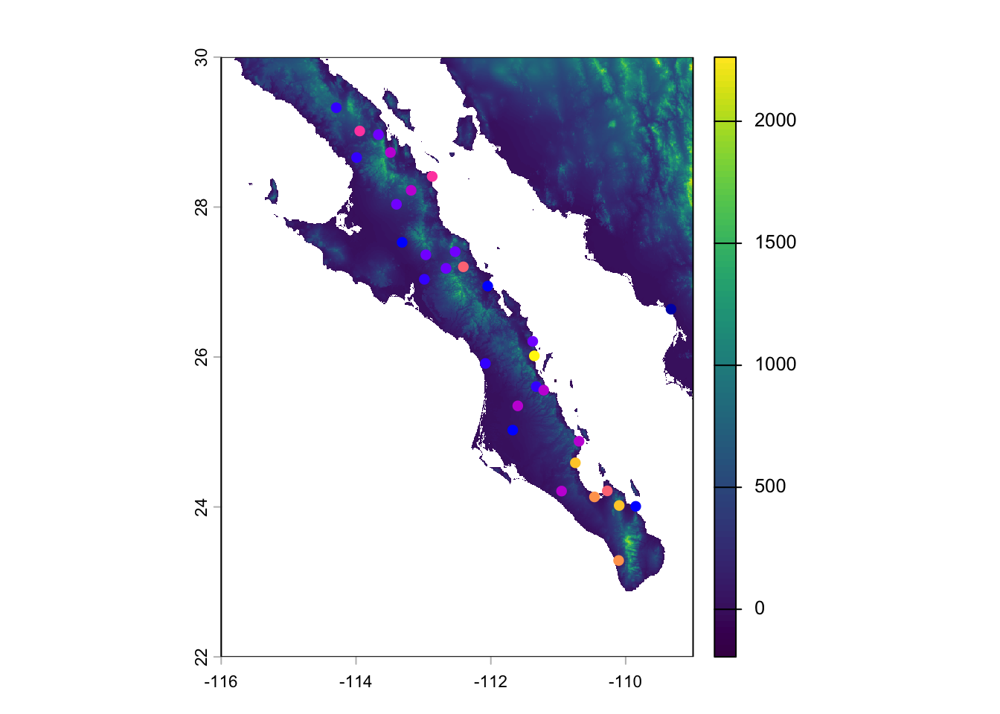
You need to be careful here. When you use built-in graphics processes in a markdown document such as this and intend to add subsequent plots to an existing plot you cannot run the lines individually. They must be all executed as the whole chunk. So there is no CTRL/CMD + RETURN action here, it will plot the first one and then complain throughout the remaining ones saying something like plot.new has not been called yet. So you have to either render the whole document or just run the whole chunk to get them to overlay.
There is another way to grab just a portion of the raster—similar to cropping—which is to mask. A mask will not change the size of the raster but just put NA values in the cells that are not in the area of interest. So if we were to just mask above, it would never actually reduce the size of the raster, just add a lot more NA values. However, the setup is the same. The one difference is that terra functions want their vector data as a terra vector object (a SpatVector) rather than an sf object, so we convert the hull with vect()1.
beetles |>
filter( Site != 32 ) |>
st_union() |>
st_buffer( dist = 1 ) |>
st_convex_hull() -> hull
baja <- mask( alt, vect(hull) )
bajaclass : SpatRaster
size : 960, 840, 1 (nrow, ncol, nlyr)
resolution : 0.008333333, 0.008333333 (x, y)
extent : -116, -109, 22, 30 (xmin, xmax, ymin, ymax)
coord. ref. : lon/lat WGS 84 (EPSG:4326)
source(s) : memory
varname : alt_22
name : alt_22
min value : -202
max value : 1875And it looks like.
plot(baja)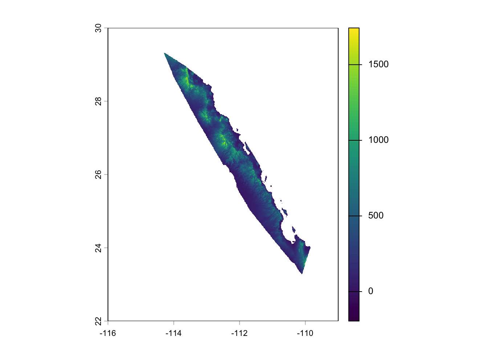
As you may suspect, our old friend ggplot has some tricks up its sleeve for us. The main thing here is that ggplot requires a data.frame object and a raster is not a data.frame — Unless we turn it into one (hehehe). Remember from the lecture on data.frame objects that we can coerce other data containers into a data.frame using the as.data.frame() function. The same works for a raster. If we pass xy=TRUE it takes each cell of the raster (and underlying matrix), makes a row from it, and includes the coordinates of the center of that cell as the x and y columns. By default, cells that are NA (the ocean) are dropped.
alt |>
as.data.frame( xy = TRUE ) |>
head() x y alt_22
25 -115.7958 29.99583 55
26 -115.7875 29.99583 126
27 -115.7792 29.99583 94
28 -115.7708 29.99583 99
29 -115.7625 29.99583 106
30 -115.7542 29.99583 120And this time it really is a data.frame.
alt |>
as.data.frame( xy = TRUE ) |>
class()[1] "data.frame"So here it is in one pipe, using the following tricks: - Converting the raster to a data.frame so it will go into ggplot - Renaming the columns of data I am going to keep so I don’t have to make xlab and ylab
alt |>
as.data.frame( xy = TRUE ) |>
transmute(Longitude=x,
Latitude=y,
Elevation=alt_22) -> alt.df
head( alt.df ) Longitude Latitude Elevation
25 -115.7958 29.99583 55
26 -115.7875 29.99583 126
27 -115.7792 29.99583 94
28 -115.7708 29.99583 99
29 -115.7625 29.99583 106
30 -115.7542 29.99583 120Then we can plot it by:
- Plotting it using geom_raster() and setting the fill color to the value of elevation. - Making the coordinates equal (e.g., roughly equal in area for longitude and latitude), and - Applying only a minimal theme.
alt.df |>
ggplot() +
geom_raster( aes( x = Longitude,
y = Latitude,
fill = Elevation) ) +
coord_equal() +
theme_minimal() -> baja_elevation
baja_elevation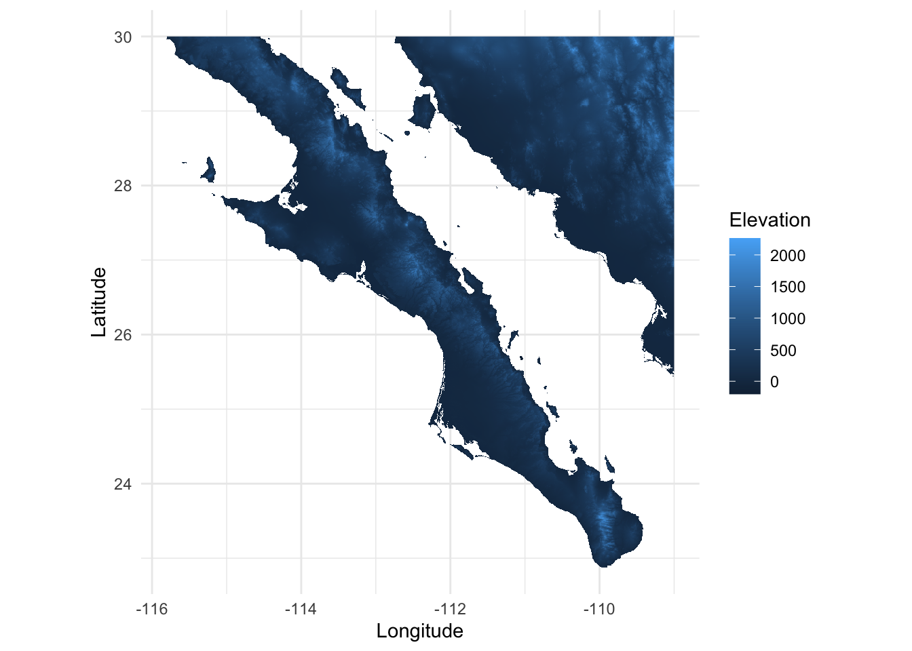
That looks good but we should probably do something with the colors. The default dark-to-light blue gradient makes it hard to see differences in elevation and, as we will see below, blue usually means water on a map. There is a built-in terrain.colors() function and we can tell ggplot to use it for the fill gradient.
baja_elevation +
scale_fill_gradientn( colors=terrain.colors(100))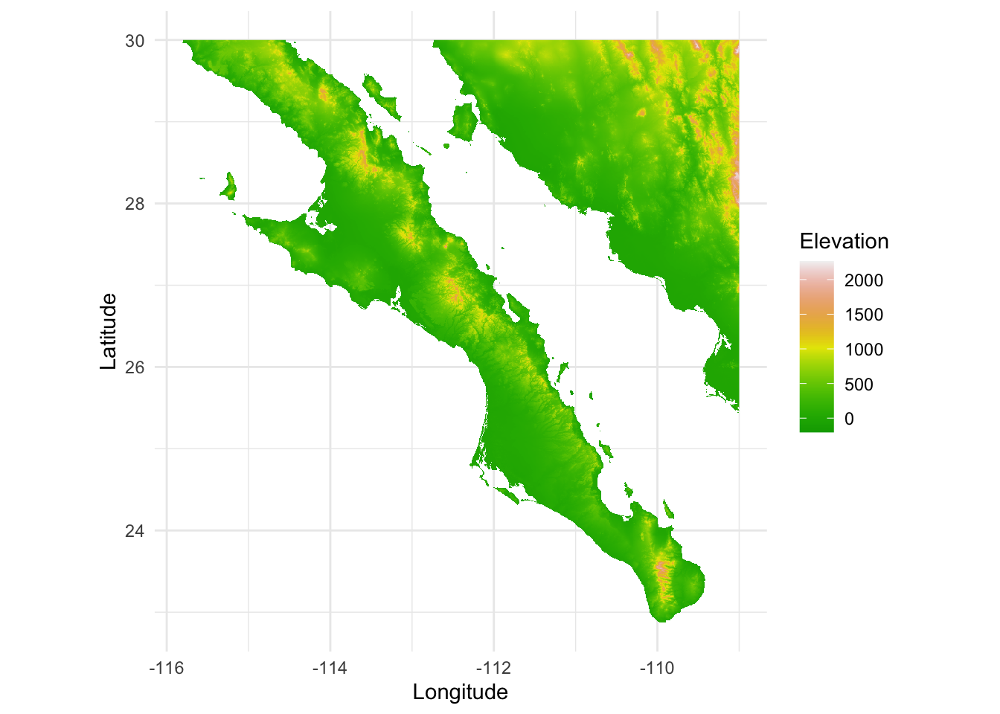
Better, but is it good? Look at the yellow band in the middle. It jumps out as if something important happens at that elevation, when it is really just where the palette changes hue. The choice of palette changes what a reader sees in the data, so it is worth a few minutes of thought.
When we map a continuous value to color, we are asking the reader to translate color back into a number. A good palette makes that translation easy and honest. There are three things to look for.
terrain.colors()) have bright bands where the color seems to change quickly and muddy regions where it hardly seems to change at all. Readers see boundaries in the bright bands that are not in the data.The kind of palette also needs to match the kind of data.
Elevation is sequential, so that is what we want here. Fortunately, several palette families have been designed with all of this in mind, and they work with any ggplot (not just maps).
The viridis palettes are built into ggplot2. They are perceptually uniform, readable with the common forms of color blindness, and go from dark to light so they print well in grayscale. The _c at the end of scale_fill_viridis_c() means continuous (there is also _d for discrete values and _b for binned ones).
baja_elevation +
scale_fill_viridis_c()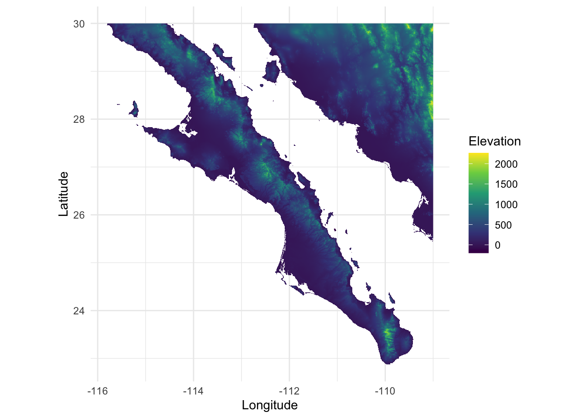
The option argument picks among several versions ("viridis", "magma", "inferno", "plasma", "cividis", and a few more).
baja_elevation +
scale_fill_viridis_c( option = "magma" )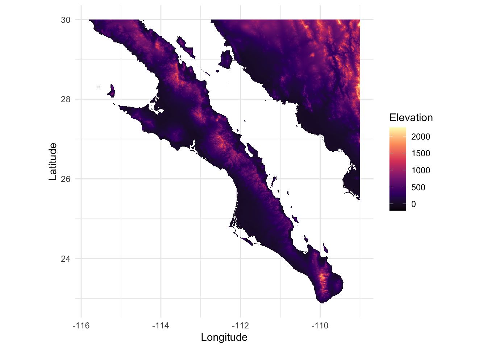
ColorBrewer is a set of palettes designed by the cartographer Cynthia Brewer specifically for maps. The website lets you filter palettes by type (sequential, diverging, qualitative) and by whether they are colorblind safe or print friendly. In ggplot the palettes come in three versions: scale_fill_brewer() for discrete values, scale_fill_distiller() for continuous values, and scale_fill_fermenter() for binned values.
baja_elevation +
scale_fill_distiller()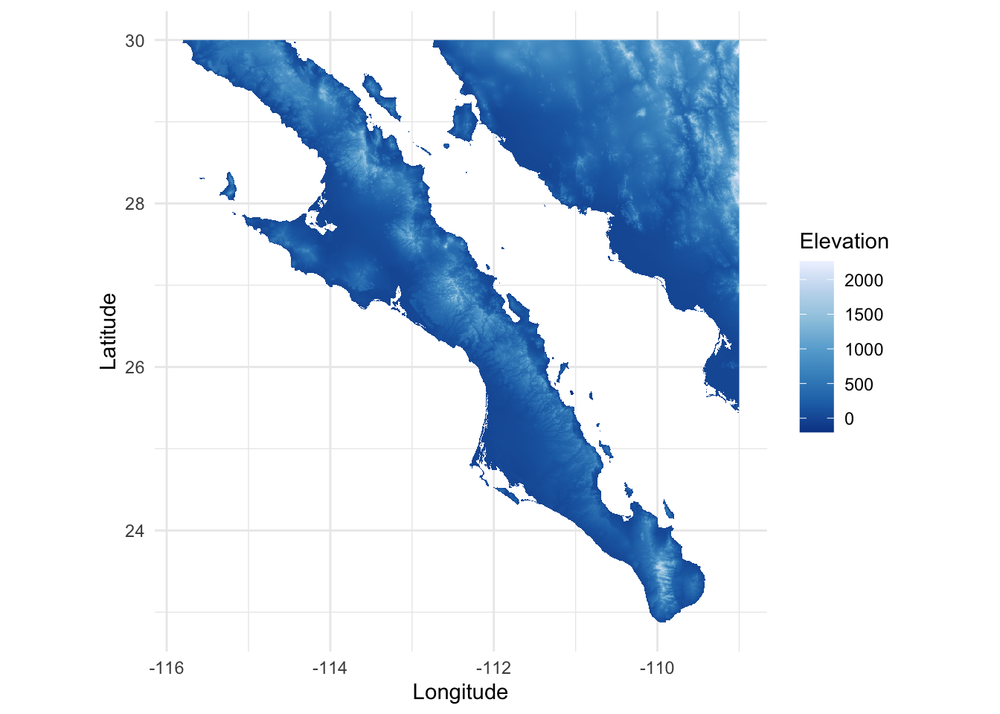
The default is the sequential "Blues" palette (which, again, reads as water). Pick another by name with the palette argument. The direction argument (1 or -1) flips which end of the palette goes with the low values.
baja_elevation +
scale_fill_distiller( palette = "YlOrBr" )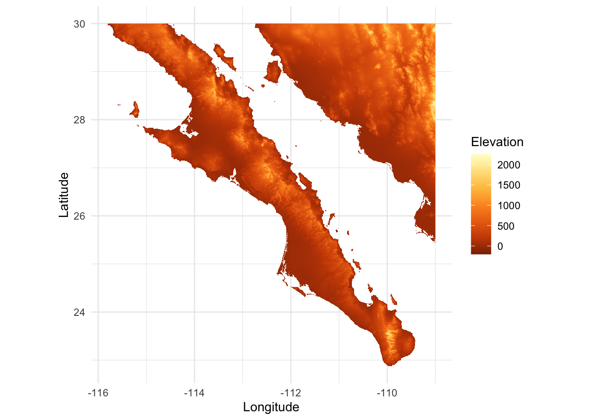
The scico library provides the Scientific Colour Maps designed by Fabio Crameri. They were made in response to how often misleading palettes show up in published figures, and every one of them is perceptually uniform and readable with color vision deficiency.
library( scico )baja_elevation +
scale_fill_scico()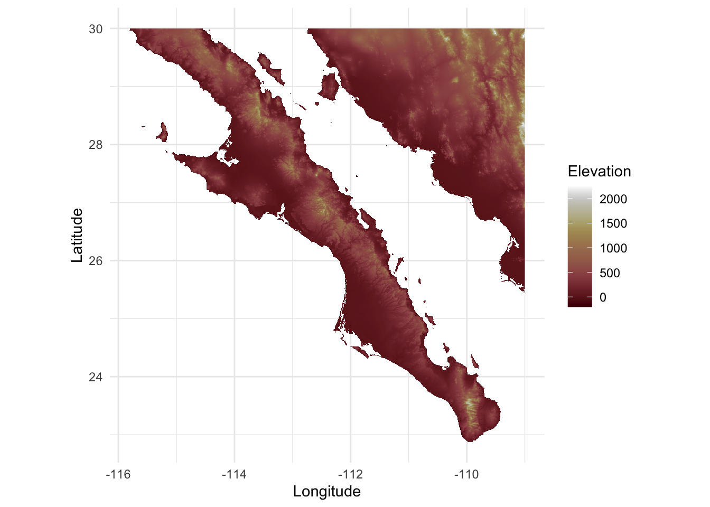
The palette argument picks among several dozen palettes, including diverging ones like "vik".
baja_elevation +
scale_fill_scico( palette = "vik" )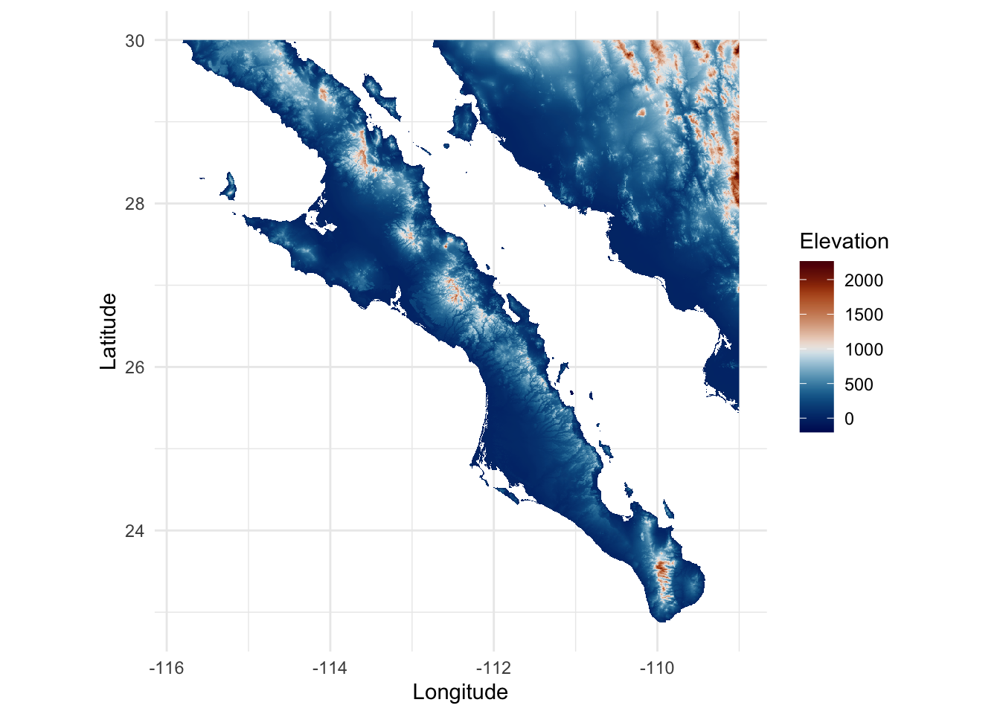
This is a good example of a technically nice palette used for the wrong kind of data. "vik" is diverging, so the neutral middle color lands on whatever elevation is halfway between the minimum and maximum (about 1000m here) and the map suggests that elevations are above or below something. Nothing special happens at 1000m. If we were mapping elevation relative to sea level (with midpoint = 0) or the change in temperature since 1950, a diverging palette would be just right.
You can also build a gradient from colors you choose. scale_fill_steps() goes from a low to a high color but bins the values into a handful of classes. Binning gives up some detail, but it makes it much easier to read an actual value off the map, much like the contour bands on a topographic map.
baja_elevation +
scale_fill_steps( low = "springgreen4",
high = "yellow" )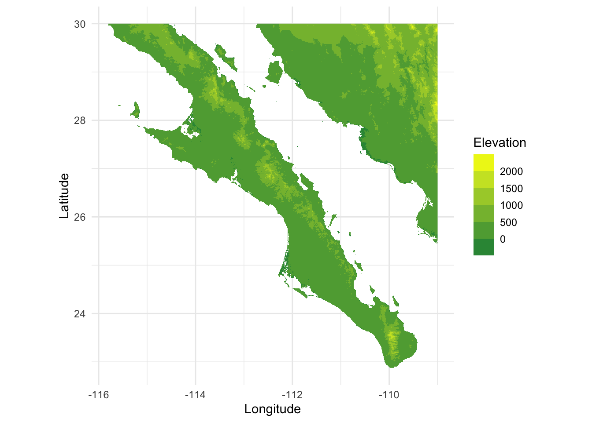
Or, you can set up your own diverging gradient using low, mid, and high colors and then tell it where the midpoint is along that gradient and it will do the right thing©. Here I am not claiming that 1000m is special; I am mimicking the green-lowland, brown-mountain convention of a topographic map.
baja_elevation +
scale_fill_gradient2( low = "darkolivegreen",
mid = "yellow",
high = "brown",
midpoint = 1000 ) -> baja_map
baja_map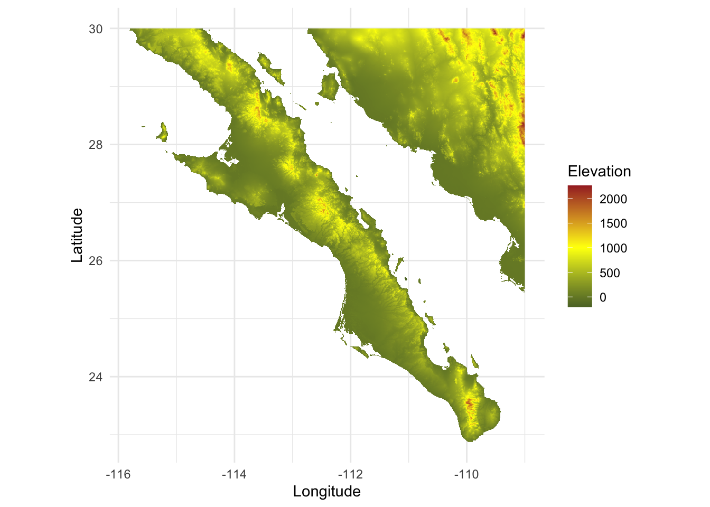
Now that looks great. Now, how about overlaying the points onto the plot and indicating the size of the point by the ♂♀ ratio.
baja_map +
geom_sf( aes(size = MFRatio ),
data = beetles,
color = "dodgerblue2",
alpha = 0.75)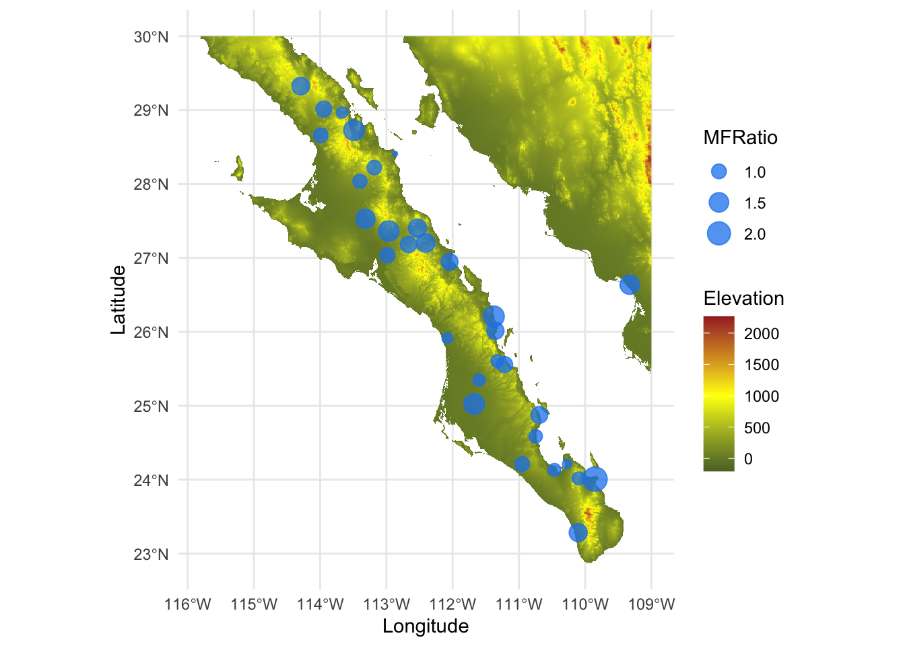
Now that looks nice.
tidyterraConverting the raster into a data.frame works, and it is worth knowing how to do because it shows exactly what ggplot needs. It is, however, a bit clunky. We had to make a second copy of the data (alt.df), rename the columns by hand, and remember to add coord_equal(). The tidyterra library is a bridge between terra and the tidyverse that takes care of all of this for us.
library( tidyterra )
Attaching package: 'tidyterra'The following object is masked from 'package:stats':
filterIt helps in three main ways.
geom_spatraster() plots the raster directlyInstead of converting to a data.frame and using geom_raster(), we hand the SpatRaster itself to geom_spatraster().
ggplot() +
geom_spatraster( data = alt ) +
theme_minimal()<SpatRaster> resampled to 500472 cells.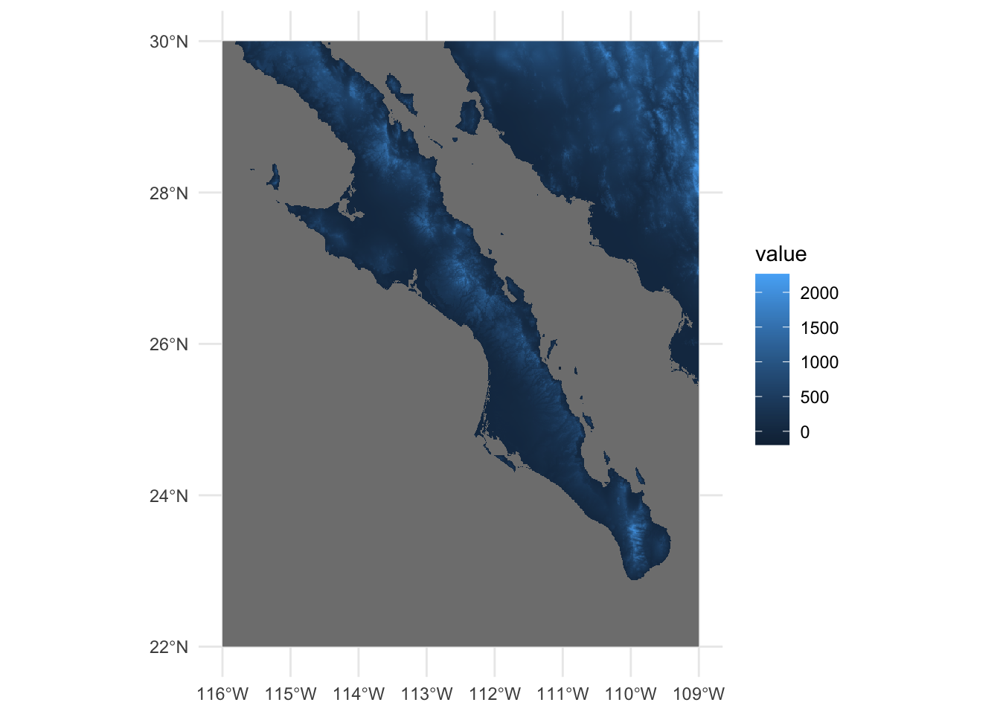
Notice what we did not have to do:
as.data.frame() and no extra copy of the data.coord_equal(). Since the raster knows its CRS, geom_spatraster() uses coord_sf() and we get proper longitude and latitude labels on the axes, just like geom_sf().geom_spatraster() automatically resampled it down to about 500,000 for drawing (that is the resampled to ... cells message) so that plotting does not take forever. The raster itself is not changed.The ocean cells are NA and get plotted as gray by default. Every scale_fill_*() function takes a na.value argument and setting na.value = NA makes them transparent.
The default blue gradient in that plot is not wrong, but it does not read as elevation. Low and high ground are just darker and lighter blue, and blue usually means water on a map. Readers of maps already know a convention for elevation—greens for lowlands, tans and browns for hills and mountains, white for the peaks—and using it lets them read the terrain without studying the legend.
tidyterra comes with color scales designed for maps that follow these conventions. For elevation, the hypsometric scales (scale_fill_hypso_c()) use the colors you see on printed topographic maps, and the scale_fill_whitebox_c() and scale_fill_wiki_c() scales have several more. Here I set the legend title with labs() since the raster layer is still named alt_22.
ggplot() +
geom_spatraster( data = alt ) +
scale_fill_hypso_c( palette = "etopo1_hypso",
na.value = NA ) +
labs( fill = "Elevation (m)" ) +
theme_minimal() -> baja_hypso<SpatRaster> resampled to 500472 cells.baja_hypso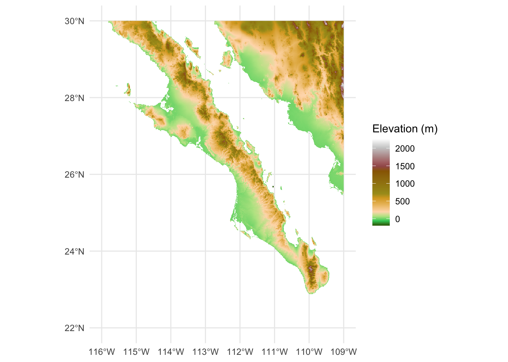
Because this is just a ggplot object, we can overlay the beetle data exactly the same way as before.
baja_hypso +
geom_sf( aes(size = MFRatio ),
data = beetles,
color = "dodgerblue4",
alpha = 0.75)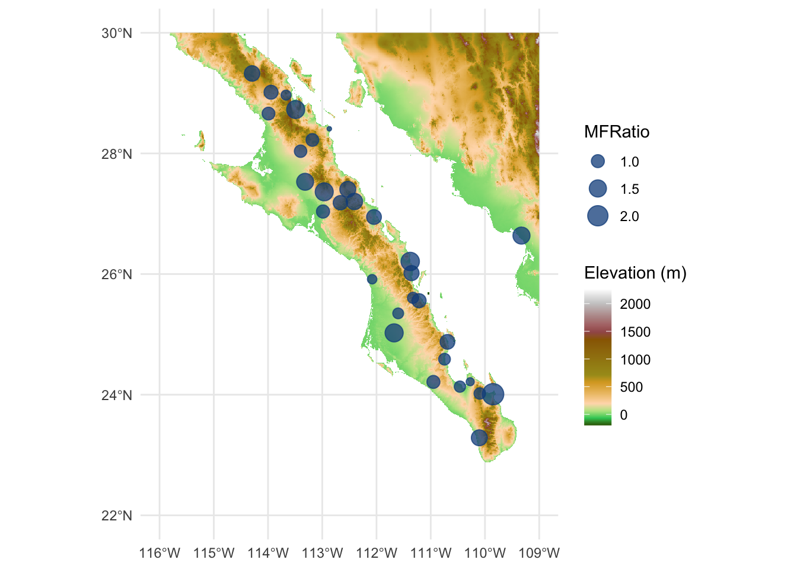
dplyr verbs work on rastersThis is the big one. Look back at what we have had to do to change anything about the raster’s data. Its single layer is still named alt_22 (the name of the file, not a description), so we renamed it inside transmute() when making alt.df and again with labs() for the legend. Without tidyterra, renaming the layer itself means names(alt) <- ..., computing a new layer means raster algebra, and picking out cells means indexing into values() (we will see that in the Applications section). Those are three different idioms, none of which look like the dplyr code we write for everything else.
With tidyterra loaded, many of the dplyr verbs we already know—rename(), select(), mutate(), filter()—work directly on a SpatRaster, treating each layer as a column and each cell as a row. And they give back a SpatRaster, so we never leave the raster world.
For example, let’s give that layer a better name than alt_22 once, so every later plot and filter can just say Elevation.
alt |>
rename( Elevation = alt_22 ) -> baja_elev
baja_elevclass : SpatRaster
size : 960, 840, 1 (nrow, ncol, nlyr)
resolution : 0.008333333, 0.008333333 (x, y)
extent : -116, -109, 22, 30 (xmin, xmax, ymin, ymax)
coord. ref. : lon/lat WGS 84 (EPSG:4326)
source(s) : memory
varname : alt_22
name : Elevation
min value : -202
max value : 2263Or, if we needed to share a map with a collaborator (or a U.S. agency) that works in feet rather than meters, make a new layer with the elevation in feet.
baja_elev |>
mutate( Feet = Elevation * 3.28084 )class : SpatRaster
size : 960, 840, 2 (nrow, ncol, nlyr)
resolution : 0.008333333, 0.008333333 (x, y)
extent : -116, -109, 22, 30 (xmin, xmax, ymin, ymax)
coord. ref. : lon/lat WGS 84 (EPSG:4326)
source(s) : memory
names : Elevation, Feet
min values : -202, -662.72968
max values : 2263, 7424.54092Notice that the result has two layers now (nlyr is 2), one for each “column”. A single SpatRaster can hold many layers that share the same grid, such as elevation, temperature, and precipitation for the same cells, or the same variable measured in different years. Base plot() draws one panel per layer.
baja_elev |>
mutate( Feet = Elevation * 3.28084 ) |>
plot()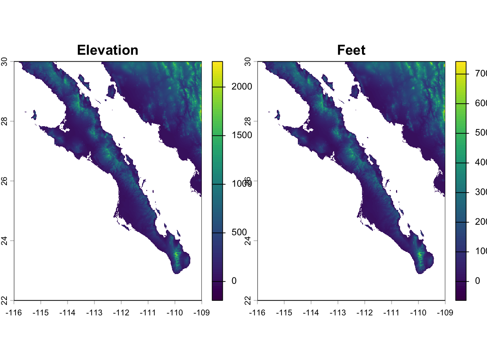
We will put filter() to work in the Applications section below.
You can get some information from a raster plot interactively by using the click function. This must be done with an active raster plot. After that, you use the click() function to grab what you need. Your mouse will turn from an arrow into a cross hair and you can position it where you like and get information such as the coordinates (spatial) of the point and the value of the raster pixel at that location.
The n= argument sets how many points to collect (it defaults to 10); you can stop early by pressing ESC. If you set id=TRUE it will plot the number of the point onto the map so you can see where you had clicked. Since this is interactive, you will not see the process when you execute the code below, but it will look like this:
plot( alt )
click(alt, xy=TRUE, n=3 ) -> points
Here is what the points look like.
points x y alt_22
1 -113.6292 28.45417 870
2 -112.4792 26.85417 1185
3 -111.2458 24.83750 135
4 -109.9958 23.48750 1145I’m going to rename the column names.
points |>
transmute( Longitude = x,
Latitude = y,
Value = alt_22) -> sitesAnd then I can plot those points (using geom_point()) onto our background map.
baja_map +
geom_point( aes(x = Longitude,
y = Latitude,
size = Value), data=sites, color="red") 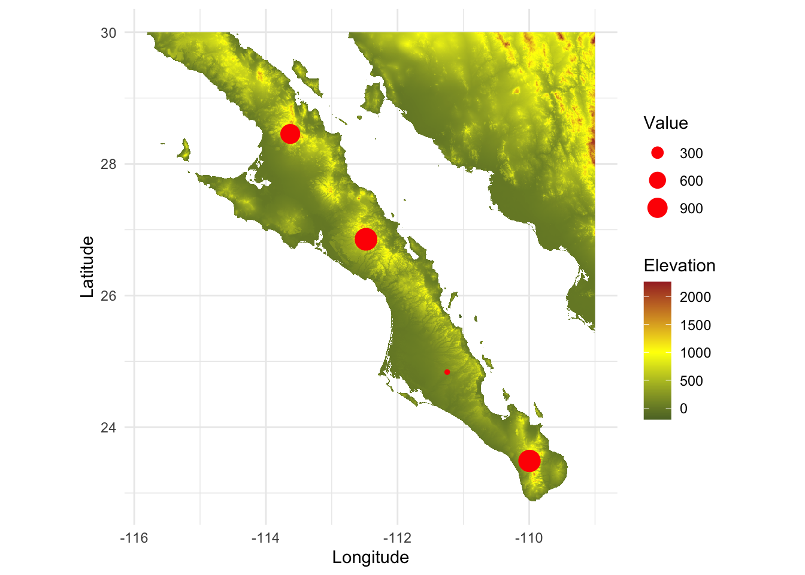
Mexellent!
Our raster is in longitude and latitude, whose units are degrees. Degrees are fine for saying where something is, but they are a poor ruler: a degree of longitude is about 111 km wide at the equator and shrinks to nothing at the poles. If we want to measure distances or areas (e.g., how much land lies within an elevation band), we want a projected coordinate system whose units are meters.
Just like points, we can reproject the entire raster using the project() function. Here I am going to project the raster into UTM Zone 12N, a common projection for this part of Mexico from epsg.io.
The terra library understands EPSG codes, so all we need is the code for that projection (6367) written as a character string.
new.proj <- "EPSG:6367"Then we pass it to the project() function as the new CRS.
alt.utm <- project( alt, new.proj )
plot( alt.utm, xlab="Easting", ylab="Northing" )Easy.
Notice that the axes are now Easting and Northing in meters. That raises a problem as soon as we want to put the beetles back on the map: the beetle points are still in longitude and latitude (EPSG:4326), but the raster is now in UTM (EPSG:6367).
plot() does not
Base plot() with add=TRUE does not work here. It does not look at the CRS of either object, it just draws numbers. A beetle at longitude -113, latitude 27 gets drawn at 27 meters north of the equator, far below the bottom of this map (which starts around 2,400,000 m). There is no error and no warning; the points silently disappear (left panel). To make it work, you have to reproject the points to match the raster yourself with st_transform() before adding them (right panel).
plot( alt.utm, main = "Without reprojecting" )
plot( st_geometry(beetles), add = TRUE, col = "red", pch = 16 )
plot( alt.utm, main = "After st_transform()" )
beetles |>
st_transform( crs = 6367 ) |>
st_geometry() |>
plot( add = TRUE, col = "red", pch = 16 )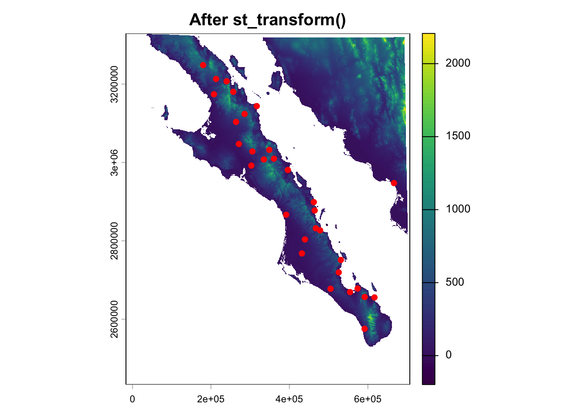
ggplot does this for you. Every layer that knows its CRS (geom_sf(), geom_spatraster(), geom_spatvector()) is reprojected on the fly to match the CRS of the first layer. We can stack the UTM raster and the longitude/latitude beetles as-is, with no st_transform() and nothing to remember.
Here is the ggplot version, with the beetles left in longitude and latitude.
ggplot() +
geom_spatraster( data = alt.utm ) +
geom_sf( data = beetles,
color = "red" ) +
scale_fill_hypso_c( na.value = NA ) +
labs( fill = "Elevation (m)" ) +
theme_minimal()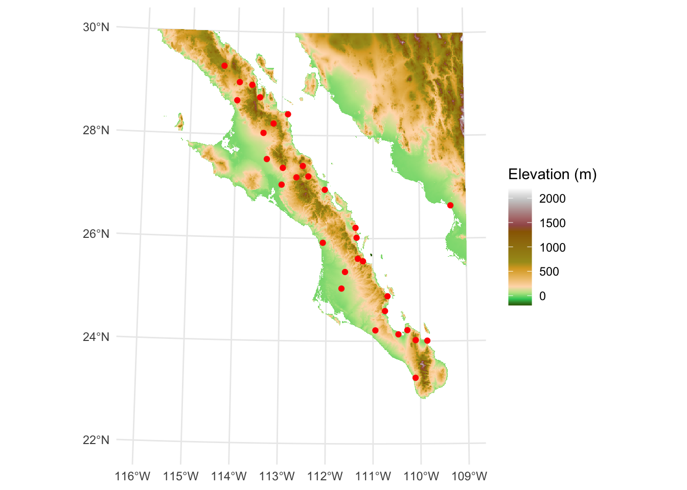
The beetles land exactly where they should. Notice also the slight tilt in the grid lines. ggplot labels the graticule in degrees, but lines of longitude are not parallel in UTM, which is exactly what we would expect.
OK, so now we can make and show a raster but what about doing some operations? A raster is just a matrix decorated with more geospatial information. This allows us to do normal R like data manipulations on the underlying data. Let’s put that to work on two research questions from the Baja California data.

The beetle data we have been plotting come from 31 sites sampled for the bark beetle Araptus attenuatus, and MFRatio is the ratio of males to females at each site. Two questions we might ask are:
MFRatio)?The beetle data do not include elevation, but the raster does. So the general outline is:
MFRatio and elevation.Pulling the value of a raster out at a set of points is done with the extract() function from the terra library. Just like masking, this function wants a SpatVector rather than an sf object, so we convert the points with vect(). It returns a data.frame with one row per point (in the same order as the points) and a column for the value of each raster layer at that point. By default it also adds an ID column numbering the points; since we just want the values, ID = FALSE drops it.
site_elev <- terra::extract( baja_elev, vect(beetles), ID = FALSE )
head( site_elev ) Elevation
1 18
2 103
3 66
4 50
5 87
6 681In the above code, I used the function extract() to extract the data from the baja_elev raster at the beetle sites. However, there is also an extract() function that has been brought in from the tidyr library (as part of tidyverse). In this file, I loaded library(terra) before library(tidyverse) and as such the tidyr::extract() function has overridden the one from terra—they cannot both be available. As a consequence, I use the full name of the function with package::function when I call it as terra::extract() to remove all ambiguity. If I had not, I got a message saying something like, Error in UseMethod("extract") : no applicable method for 'extract' applied to an object of class "SpatRaster". Now, I know there is an extract() function in terra so this is the dead giveaway that it has been overwritten by a subsequent library call.
Because the rows are in the same order as the beetle sites, we can add the elevation to the beetle data as a new column.
beetles |>
mutate( Elevation = site_elev$Elevation ) -> beetles
beetles |>
select( Site, MFRatio, Elevation )Simple feature collection with 31 features and 3 fields
Geometry type: POINT
Dimension: XY
Bounding box: xmin: -114.2935 ymin: 23.2855 xmax: -109.327 ymax: 29.32541
Geodetic CRS: WGS 84
# A tibble: 31 × 4
Site MFRatio Elevation geometry
<chr> <dbl> <dbl> <POINT [°]>
1 32 1.48 18 (-109.327 26.63783)
2 73 2.2 103 (-109.8507 24.00789)
3 93 1.19 66 (-112.0461 26.94589)
4 const 1.64 50 (-111.675 25.0247)
5 159 1.47 87 (-113.3161 27.52944)
6 88 1.28 681 (-114.2935 29.32541)
7 177 0.98 177 (-113.9914 28.66056)
8 166 0.731 70 (-112.0806 25.91409)
9 161 1.02 29 (-112.986 27.0367)
10 64 0.842 397 (-111.3264 25.60521)
# ℹ 21 more rowsThe simplest description of the envelope is the range of elevations at the sites.
summary( beetles$Elevation ) Min. 1st Qu. Median Mean 3rd Qu. Max.
6.0 51.0 142.0 210.2 357.5 681.0 So the beetles were found from 6m to 681m. On its own, though, that range does not tell us much. If most of the peninsula were below 681m, the beetles would just be living where the land is. To see whether the species occupies a subset of what is available, we need to compare the sites to the landscape as a whole. We can get every land cell as a data.frame with as.data.frame() and overlay the density of elevations across the landscape with the density at the beetle sites (the rug along the bottom marks each site).
baja_elev |>
as.data.frame() -> landscape
ggplot() +
geom_density( aes( x = Elevation, fill = "Landscape" ),
data = landscape,
alpha = 0.5 ) +
geom_density( aes( x = Elevation, fill = "Beetle Sites" ),
data = beetles,
alpha = 0.5 ) +
geom_rug( aes( x = Elevation ),
data = beetles ) +
labs( fill = NULL,
x = "Elevation (m)",
y = "Density" ) +
theme_minimal()
The two distributions overlap through the lowlands, but the landscape has a long tail of higher elevations that the beetles never reach. About 15% of the land in this area is higher than the highest beetle site, reaching up to 2263m. So the envelope for A. attenuatus is the lowland and mid-elevation part of the peninsula.
For the second question, a scatter plot is the place to start.
beetles |>
ggplot( aes( x = Elevation, y = MFRatio ) ) +
geom_point( size = 3 ) +
labs( x = "Elevation (m)",
y = "Male:Female Ratio" ) +
theme_minimal()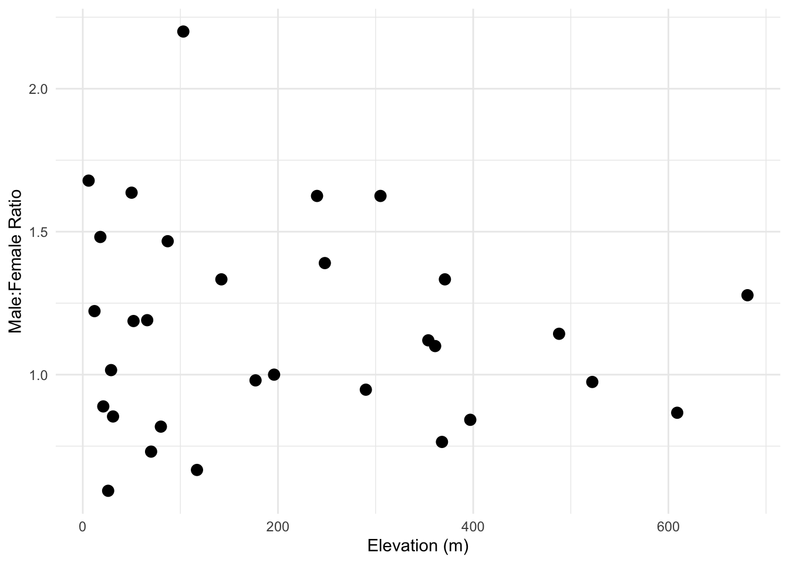
There is no obvious trend. We can quantify that with a correlation test (we will go into correlation in much more depth in a later topic).
fit <- cor.test( beetles$MFRatio, beetles$Elevation )
fit
Pearson's product-moment correlation
data: beetles$MFRatio and beetles$Elevation
t = -0.55949, df = 29, p-value = 0.5801
alternative hypothesis: true correlation is not equal to 0
95 percent confidence interval:
-0.4415112 0.2605426
sample estimates:
cor
-0.1033377 The correlation between sex ratio and elevation is weak (\(\rho =\) -0.1) and not significant (\(P =\) 0.58), so there is no evidence that sex bias in this species is related to elevation.

Euphorbia lomelii is pollinated by hummingbirds, and when it flowers is driven by elevation: plants within about 100m of each other in elevation flower at about the same time. Pollen can only move between plants that are in flower at the same time, so the elevation band around any one population marks out which other parts of the landscape it can be connected to.
What are the parts of Baja California that are within 100m of the elevation of site named San Francisquito (
sfran)?
To answer this, we have the following general outline of operations.
sfranalt raster that is within 100m (+/-) of that site.To do this we will use both the alt and the beetles data objects.
First, we find out the coordinates of the site.
sfran <- beetles$geometry[ beetles$Site == "sfran"]
sfranGeometry set for 1 feature
Geometry type: POINT
Dimension: XY
Bounding box: xmin: -112.964 ymin: 27.3632 xmax: -112.964 ymax: 27.3632
Geodetic CRS: WGS 84POINT (-112.964 27.3632)Then we extract the elevation at that one point, exactly as we did for all of the sites above.
terra::extract(alt, vect(sfran) ) ID alt_22
1 1 305So sfran is at 305m, and the band we are interested in runs from 205m to 405m.
To work on a raster directly, we can access the values within it using the values() function (I know, these statisticians/programmers are quite clever).
So, to make a copy and make only the values that are +/- 100m of sfran we can.
alt_band <- alt
values( alt_band )[ values(alt_band) <= 205 ] <- NA
values( alt_band )[ values(alt_band) >= 405 ] <- NA
alt_bandclass : SpatRaster
size : 960, 840, 1 (nrow, ncol, nlyr)
resolution : 0.008333333, 0.008333333 (x, y)
extent : -116, -109, 22, 30 (xmin, xmax, ymin, ymax)
coord. ref. : lon/lat WGS 84 (EPSG:4326)
source(s) : memory
varname : alt_22
name : alt_22
min value : 206
max value : 404Then we can plot overlay plots of each (notice how I hid the legend for the first alt raster).
plot( alt, col="gray", legend=FALSE, xlab="Longitude", ylab="Latitude")
plot( alt_band, add=TRUE )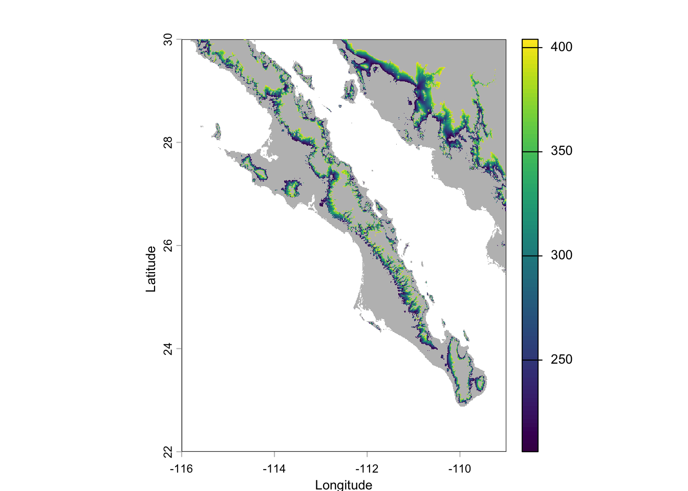
We can also proceed by relying upon the data.frame objects representing the elevation. So let’s go back to our alt.df object and use that in combination with a filter and plot both data.frame objects (the outline of the landscape in gray and the elevation range as a gradient). I then overlay the beetle data with the ratios as sizes and label the locales with ggrepel. Notice here that you can use the sf::geometry object from beetles if you pass it through the st_coordinates function as a statistical tranform making it regular coordinates and not sf objects (yes this is kind of a trick and hack but KEEP IT HANDY!).
library( ggrepel )
alt.df |>
filter( Elevation >= 205,
Elevation <= 405) |>
ggplot() +
geom_raster( aes( x = Longitude,
y = Latitude),
fill = "gray80",
data=alt.df ) +
geom_raster( aes( x = Longitude,
y = Latitude,
fill = Elevation ) ) +
scale_fill_gradient2( low = "darkolivegreen",
mid = "yellow",
high = "brown",
midpoint = 305 ) +
geom_sf( aes(size=MFRatio),
alpha=0.5,
color="dodgerblue3",
data=beetles) +
geom_text_repel( aes( label = Site,
geometry = geometry),
data = beetles,
stat = "sf_coordinates",
size = 4,
color = "dodgerblue4") +
coord_sf() +
theme_minimal() Warning in st_point_on_surface.sfc(sf::st_zm(x)): st_point_on_surface may not
give correct results for longitude/latitude dataVery nice indeed.
tidyterra Verbs on the RasterOption 1 kept the data as a raster but had us poking at values() with indices. Option 2 let us use filter() but only after making a whole data.frame copy of the raster. With tidyterra, we can get the best of both and filter() the raster itself. Cells that do not meet the criteria are set to NA and the result is still a SpatRaster.
baja_elev |>
filter( Elevation >= 205,
Elevation <= 405 ) -> elev_band
elev_bandclass : SpatRaster
size : 960, 840, 1 (nrow, ncol, nlyr)
resolution : 0.008333333, 0.008333333 (x, y)
extent : -116, -109, 22, 30 (xmin, xmax, ymin, ymax)
coord. ref. : lon/lat WGS 84 (EPSG:4326)
source(s) : memory
name : Elevation
min value : 205
max value : 405If we plot only elev_band, the band floats in empty space and it is hard to tell where the coastline is or how the band sits on the peninsula. Like Option 2, we want the rest of the land drawn in gray underneath as context. We cannot just plot baja_elev with fill = "gray80", though, because a constant fill colors the NA (ocean) cells as well and the whole map turns gray. Instead, we turn the land into a polygon: not.na() makes a raster that is 1 on land and 0 in the ocean, as.polygons() turns each of those values into a polygon (a SpatVector), and filter() keeps the land one. tidyterra provides geom_spatvector() to plot it.
baja_elev |>
not.na() |>
as.polygons() |>
filter( Elevation == 1 ) -> landThen it is the same plot as Option 2, without the data.frame.
ggplot() +
geom_spatvector( data = land,
fill = "gray80",
color = NA ) +
geom_spatraster( data = elev_band ) +
scale_fill_gradient2( low = "darkolivegreen",
mid = "yellow",
high = "brown",
midpoint = 305,
na.value = NA ) +
geom_sf( aes(size=MFRatio),
alpha=0.5,
color="dodgerblue3",
data=beetles) +
geom_text_repel( aes( label = Site,
geometry = geometry),
data = beetles,
stat = "sf_coordinates",
size = 4,
color = "dodgerblue4") +
labs( x = NULL, y = NULL ) +
theme_minimal()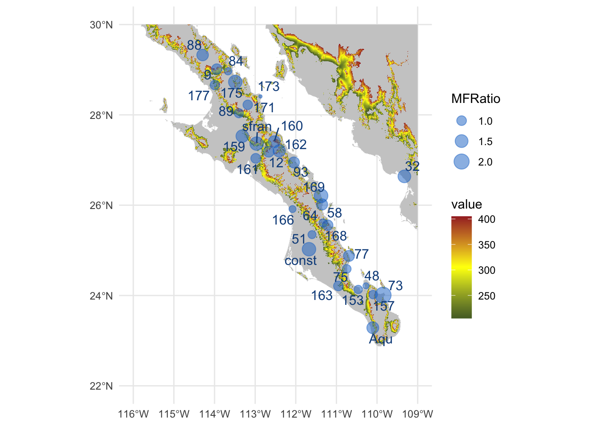
Which approach you use is up to you. For quick looks, base plot() is hard to beat. When you want a publication-quality map, ggplot with tidyterra lets you use everything you already know about the tidyverse and ggplot without converting your rasters into something else.
A SpatVector is how terra represents points, lines, and polygons. It holds the same kind of information as an sf object but is put together in a slightly different way. We use sf for vector data in this course and convert with vect() only when handing something to a terra function.↩︎